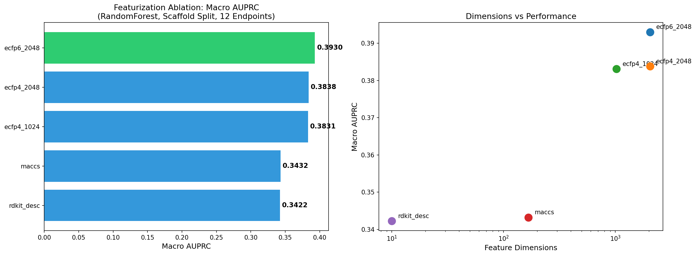
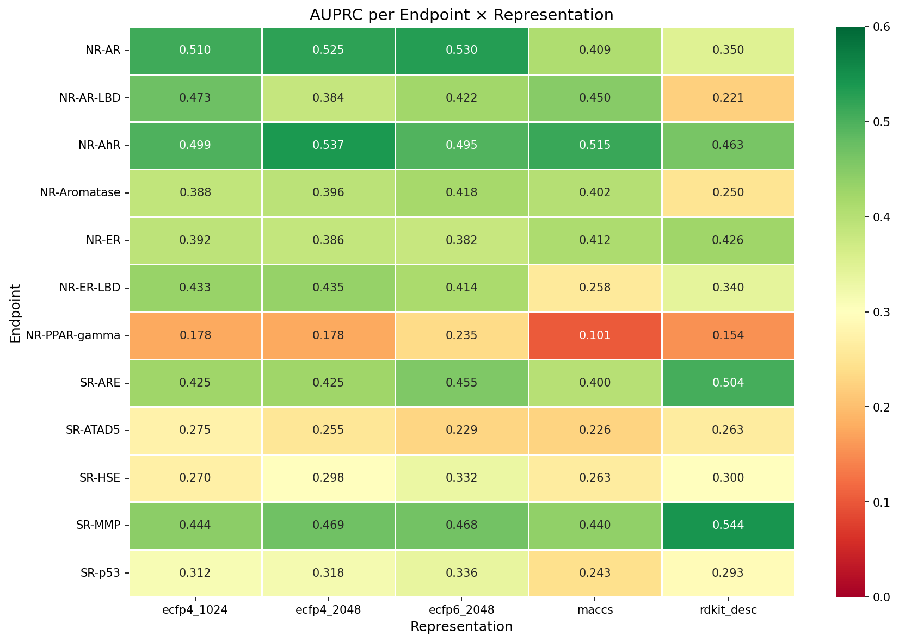
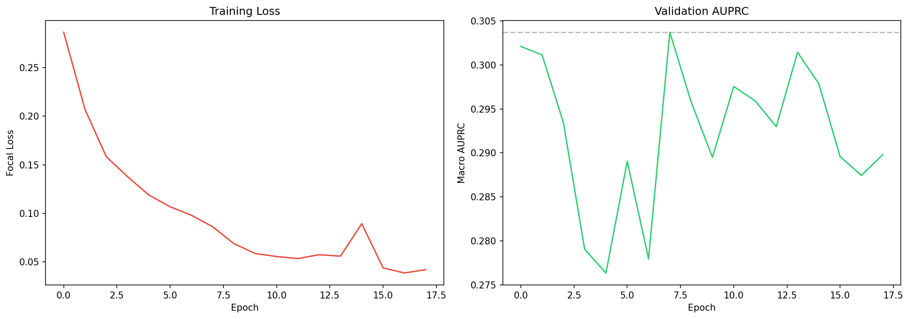
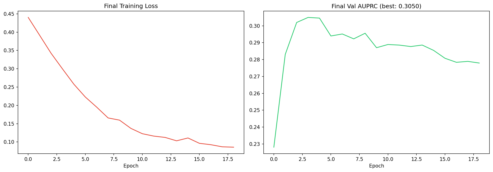
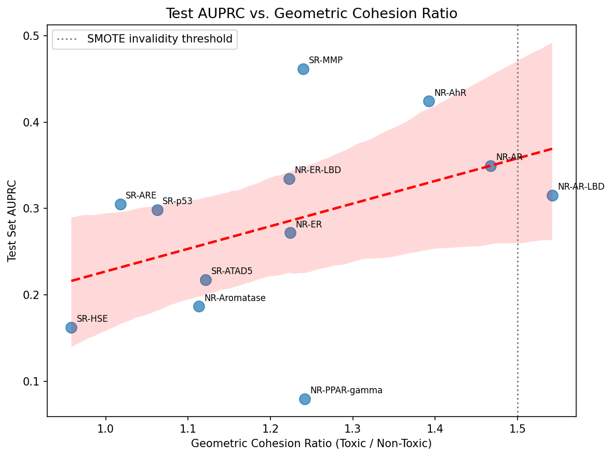

The Core Novelty: This proves that for certain endpoints, toxic molecules are structurally clustered. Endpoints with a ratio > 1.5 (red line) suffer from "Geometric Imbalance."
3. Featurization Ablation Study (03_Featurization_Ablation.ipynb)
A. Featurization Performance Comparison

B. AUPRC per Endpoint Heatmap

4. ToxNet Training (04_Training.ipynb)
A. Initial Training History (Sanity Check)

B. Final Optimized Model Training

5. Evaluation & Calibration (05_Evaluation.ipynb)
A. Test AUPRC vs. Geometric Cohesion Ratio

Proving Claim 1: Endpoints with high geometric cohesion generally generalize poorly on unseen scaffolds, resulting in lower AUPRC. This ties the entire research narrative together.